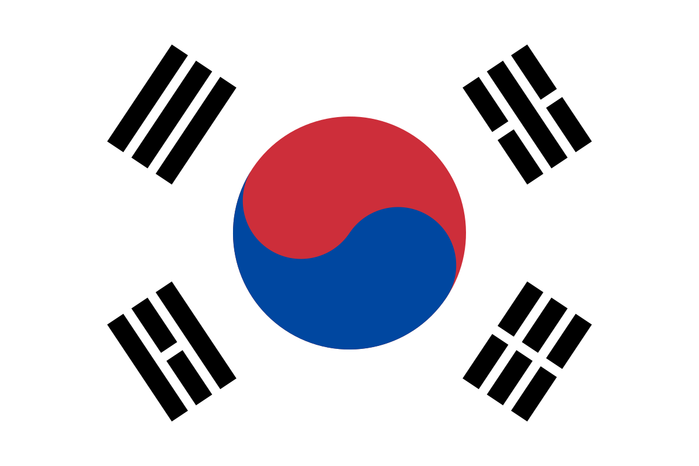

안녕하세요 대한민국 커뮤니티 사이트에 오신걸 환영합니다.

대한민국 소개
대한민국(大韓民國, 영어: Republic of Korea, 약칭: ROK[3])은 동아시아의 한반도 남부에 위치해 있는 민주공화국이다. 또한 대한민국은 서쪽으로 황해를 사이에 두고 중화인민공화국이, 동쪽으로는 동해를 사이에 두고 일본이 위치하며, 북쪽으로는 조선민주주의인민공화국과 맞닿아 있다. 수도는 서울특별시이고, 실질적 행정 수도는 세종특별자치시이다. 대한민국의 국기는 대한민국 국기법에 따라 태극기[4], 국가는 관습상 애국가[5], 국화는 관습상 무궁화이다. 공용어는 한국어와 한국 수어이다. 대한민국 내에서는 대한민국을 간단히 한국(韓國) 또는 남한(南韓) 등으로도 부른다. 국제사회에서는 관습상 대한민국을 간단히 코리아라 부르며 이름은 동아시아의 고대 국가인 고구려에서 유래되었다.[6][7][8][9] 조선민주주의인민공화국에서는 남조선(南朝鮮)으로 불린다[10][11]. 대한민국은 과거엔 구한국(舊韓國), 대한제국과 구별하여 신한국(新韓國)이라고 불리기도 하였다. 전체 5,100만명 인구 중 절반이 세계에서 네 번째로 큰 대도시 경제권인 수도권에 살고있다.[12] 연호는 1962년 1월 1일부터 서력기원을 사용한다.
대한민국을 대표하는 4가지를 소개하도록 하겠습니다.
- 싸이
- 삼성
- 한복
- 김치